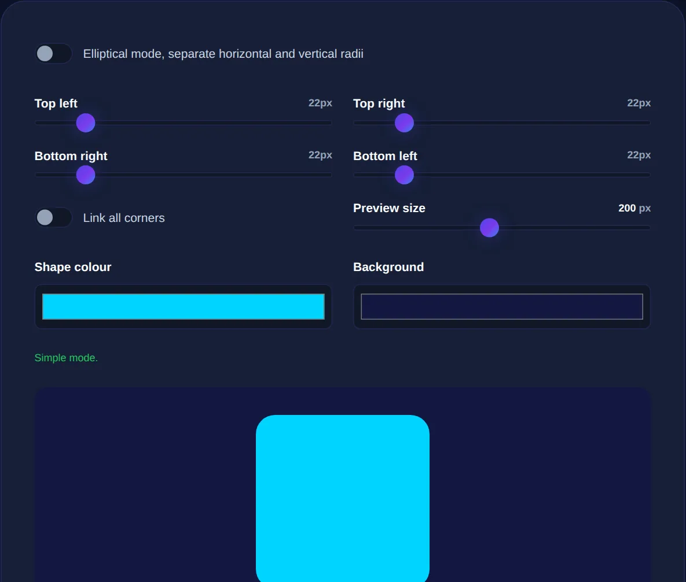

CSS Border Radius: Rounded Corners Done Right
How border-radius works beyond simple rounding, why corner style shapes a brand's feel, and how to get consistent results.
By Mubasher Hussain · Published 2026-07-29 · Updated 2026-09-01 · 1053 words · about 5 minute read
Border radius rounds the corners of an element, and although it sounds trivial, corner style is one of the most influential details in a design's personality. Sharp corners feel formal and precise; gently rounded ones feel friendly and modern; fully rounded pills feel soft and approachable. CSS border-radius does more than most people realise, from perfect circles to individually-shaped corners. The Border Radius Generator lets you shape corners visually and copy the CSS, and this article explains how it works.
Consistent corner rounding is a quiet hallmark of professional design. When every element shares the same corner style, the interface feels coherent; when radii are applied inconsistently, it feels careless, even if nothing else is wrong.
Beyond simple rounding
The basic use of border-radius applies the same rounding to all four corners, but it is far more flexible than that. You can set a different radius for each corner individually, rounding some and leaving others sharp, useful for tabs, speech bubbles and cards that connect to other elements. You can specify the radius in fixed pixels for a constant rounding, or in percentages that scale with the element's size. And you can give each corner an elliptical radius with different horizontal and vertical values, producing asymmetric, organic curves rather than perfect quarter-circles.

Circles, pills and squircles
A few special cases come up constantly:
- A perfect circle: set the radius to 50% on a square element, and it becomes a circle. This is how round avatars and icon buttons are made.
- A pill shape: set a very large radius (or 50%) on a rectangle, and the short ends round into full semicircles, giving the pill shape popular for tags and buttons.
- Subtle rounding: a small radius of a few pixels softens corners just enough to feel modern without looking overtly rounded.
- Squircle-like shapes: larger radii on a nearly-square element approximate the soft-square look popular in app icons.
Pick a small set of radius values, say a small one for buttons and inputs, a larger one for cards, and use them consistently everywhere. Random, inconsistent rounding is one of the clearest signs of an unpolished design.
How corner style shapes a brand
Corner radius carries surprising emotional weight. Studies of visual perception suggest people find rounded shapes more approachable and comfortable, while sharp corners read as serious, precise or premium. This is why the choice is a genuine branding decision: a playful consumer app might use generous rounding to feel friendly, while a financial or enterprise product might use minimal rounding to feel authoritative. Neither is right or wrong, but the choice should be deliberate and consistent, because it sets a tone that runs through the entire interface.
Getting consistent results
The practical route to good corners is to define your radius values once and reuse them. Decide on a scale, perhaps a small, medium and large radius, and apply them by role rather than picking a new number each time. Keep in mind that nested rounded elements need care: a rounded element inside another rounded element should usually have a slightly smaller radius, so its corners sit neatly within the parent's, rather than the same radius, which can look slightly off. A generator helps you see the shape as you adjust it and copy the exact CSS, which is quicker and more reliable than guessing pixel values.
Shape rounded corners visually, all four together or each individually, including elliptical curves, and copy the CSS, entirely in your browser.
Corners as part of a surface
Rounded corners work with the other properties that define a surface. A card's rounded corners combine with a box shadow to make it feel like a physical object lifted off the page, and both sit over a background that might be a gradient. The frosted-glass look from a glassmorphism generator also relies on rounded corners to feel soft and tactile. Corner style, shadow and background together define how a surface reads, which is why consistency across all three matters.
Nesting rounded corners correctly
A subtle detail that separates careful design from sloppy design is how rounded corners nest inside one another. When a rounded element sits inside another rounded element, a rounded button inside a rounded card, an image inside a rounded frame, using the same radius on both makes the inner corner look slightly wrong, because its curve does not sit concentrically within the outer curve. The correct relationship is that the inner radius should be smaller than the outer one, reduced by roughly the amount of padding between them, so the two curves share a common centre and the inner shape nestles neatly inside the outer.
This concentric-corner principle is easy to overlook but immediately noticeable once you know to look for it: mismatched nesting produces an awkward, pinched gap at the corners that makes an interface feel subtly off, even to people who cannot articulate why. Getting it right, by contrast, gives grouped elements a satisfying, precisely-machined quality. The same idea governs things like a rounded avatar inside a rounded card, or rounded inputs inside a rounded panel. When you define your radius scale, it helps to think of the values not just as isolated choices but as a set that will need to nest, choosing steps that relate sensibly to your standard padding. Attention to this kind of detail is exactly what 'premium' visual polish is made of, not any single dramatic flourish, but many small relationships handled correctly, of which concentric corner rounding is one of the most quietly influential.
To sum up: border-radius rounds corners, but it does far more than a single value suggests, individual corners, percentages for circles and pills, and elliptical curves for organic shapes are all possible. Corner style meaningfully shapes a design's personality, from friendly and soft to precise and formal, so choose it deliberately and, above all, apply a small set of radius values consistently. Combined thoughtfully with shadows and backgrounds, well-judged rounded corners are a small detail that does a lot of the work in making an interface feel modern and polished.